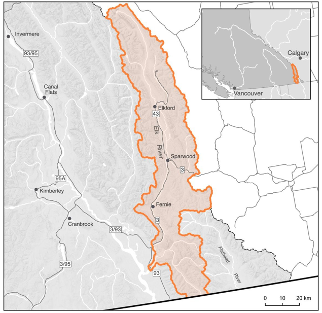
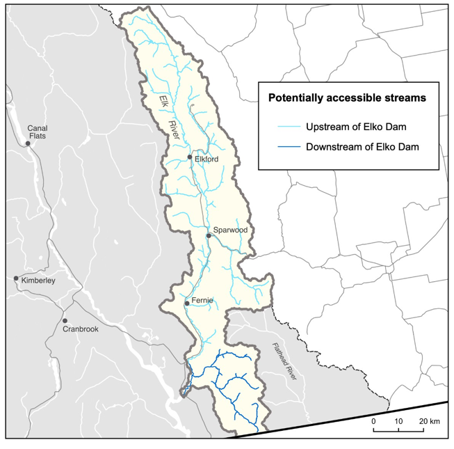

Secwepemctsín | Common Name | Scientific Name |
|---|---|---|
Kekèsu | Chinook Salmon | Oncorhynchus tshawytscha |
Sxeyqs | Coho Salmon | Oncorhynchus kisutch |
Sqlelten7ùwi | Sockeye Salmon | Oncorhynchus nerka |
Plan Purpose, Approach, and Scope
The following Watershed Connectivity Restoration Plan (WCRP) represents the culmination of a one-year collaborative planning effort for the Elk River watershed, the overall aim of which is to reduce the threat of aquatic barriers to resident, fluvial, and adfluvial fish and the livelihoods that they support, including the continued sustenance, cultural, and ceremonial needs of the Ktunaxa people both now and into the future. This 30-year plan was developed to identify priority actions that the Elk River WCRP planning team see Planning Team for a list of team members will undertake between 2021-2041 to conserve and restore fish passage in the watershed through strategies aimed at barrier rehabilitation and barrier prevention.
WCRPs are long-term, actionable plans that blend local stakeholder and rightsholder knowledge with innovative GIS analyses to gain a shared understanding of where restorataion efforts will have the greatest benefit for fish. The planning process is inspired by the Conservation Standards (v.4.0), which is a conservation planning framework that allows planning teams to systematically identify, implement, and monitor strategies to apply the most effective solutions to high-priority conservation problems. There is a rich history of fish and fish habitat conservation and restoration work in the Elk River watershed that this WCRP builds upon, including the work undertaken by the Ktunaxa Nation, the Province of British Columbia, and industry proponents, among others. The Canadian Wildlife Federation will continue to engage and coordinate with local partners and existing initiatives, including the Elk Valley Cumulative Effects Management Framework, the Elk Valley Fish and Fish Habitat Committee, and the Elk River Watershed Collaborative Monitoring Program.
The planning team compiled existing barrier location and assessment data, habitat data, and previously identified priorities, and combined this with local knowledge to create a strategic watershed-scale plan to improve connectivity. To expand on this work, the Elk River WCRP planning team applied the WCRP planning framework to define the thematic scope of freshwater connectivity and refine the geographic scope to identify those portions of the watershed where barrier prioritization will be conducted, and subsequent rehabilitation efforts will take place. Additionally, the team selected focal fish species, assessed their current connectivity status in the watershed, defined concrete goals for gains in connectivity, and developed an intermediate list of barriers for rehabilitation to achieve those goals. Field assessments were completed for 31 barriers above Elko Dam, and 21 barriers below Elko Dam on the preliminary barrier list during the summer of 2021, followed by a series of WCRP Update Workshops in winter 2021. The aim of these workshops was for the team to receive updates on progress made during the field season, review assessment results and identify priority barriers, revise the connectivity status assessment and goals, and update the Operational Plan for 2022. While the current version of this plan is based on the best-available information at the time of publishing, WCRPs are intended to be living plans that are updated regularly as new information becomes available, or if local priorities and contexts change. As such, this document should be interpreted as a current snap-shot in time, and future iterations of this WCRP will build upon the material presented in this plan to continuously improve aquatic barrier rehabilitation for fish in the Elk River watershed. For more information on how WCRPs are developed, see Mazany-Wright, Noseworthy, et al. (2021).
Vision Statement
Healthy, well-connected streams and rivers within the Elk River watershed support thriving populations of Westslope Cutthroat Trout. Watershed users work together to mitigate the negative impacts of aquatic barriers, improving the resiliency of streams and rivers for the benefit and appreciation of all.
Project Scope
Connectivity is a critical component of freshwater ecosystems that encompasses a variety of factors related to ecosystem structure and function, such as the ability of aquatic organisms to disperse and/or migrate, the transportation of energy and matter (e.g., nutrient cycling and sediment flows), and temperature regulation (Seliger and Zeiringer (2018)). Though each of these factors are important when considering the health of a watershed, for the purposes of this WCRP the term “connectivity” is defined as the degree to which aquatic organisms can disperse and/or migrate freely through freshwater systems. Within this context, connectivity is primarily constrained by physical barriers including anthropogenic infrastructure such as dams, weirs, and stream crossings, and natural features such as waterfalls and debris flows. This plan is intended to focus on the direct rehabilitation and prevention of localized, physical barriers instead of the broad land-use patterns that are causing chronic connectivity issues in the watershed. The planning team decided that the primary focus of this WCRP is addressing barriers to longitudinal connectivity (i.e., along the upstream-downstream plane) due to the magnitude of the threat posed by linear development (i.e., road and rail lines) in the watershed. In the Elk River watershed, an additional connectivity consideration is identifying barriers that should not be rehabilitated to protect genetically pure Westslope Cutthroat Trout (Oncorhunchus clarkii lewisi) populations and mitigate the threat of introgression due to aquatic invasive species (AIS).

The primary geographic scope of this WCRP is the Elk River watershed, located in the Kootenays along the southeastern portion of the British Columbia-Alberta border. The scope constitutes the Elk River “watershed group” as defined by the British Columbia Freshwater Atlas (FWA), due to an effort made to standardize spatial scales of the watershed groups. A consistent spatial framework was necessary to undertake a watershed-selection process at the provincial scale to identify target watersheds to improve connectivity for salmonids. The Elk River watershed was identified by the BC Fish Passage Restoration Initiative as one of four target watersheds for WCRP development (Mazany-Wright, Norris, et al. (2021b)). The Elk River watershed has a drainage area of 430,937 ha, spanning from the Rocky Mountains in the northeast, the border with the United States in the south, and the confluence with the Koocanusa Reservoir in the southwest (Figure 1).
The Elk River watershed comprises part of the traditional territory of the Ktunaxa peoples, and contains culturally and economically important populations of Westslope Cutthroat Trout, which historically supported Indigenous sustenance and trading economies. The geographic scope for this WCRP was further refined by the planning team through the exclusion of the Flathead River system from the defined watershed group. The Flathead River is hydrographically and topographically distinct from the rest of the watershed and does not flow into the Elk River and Columbia River systems, but is considered part of the watershed group in the FWA. The planning team decided that the watershed connectivity planning process should focus on just the Elk River system and the important Westslope Cutthroat Trout populations supported by the streams and rivers there.
Additionally, the planning team decided to divide the remaining watershed into two discrete WCRP units— 1) Upstream of the Elko Dam and 2) Downstream of the Elko Dam. The Elko Dam was constructed in 1924 on the site of a series of waterfalls that were natural barriers to upstream fish passage, and the dam facility remains impassable to all fish species (J. Bisset, Bisset & Associates, pers. comm., Ladell and Baxter (n.d.)). The Elko Dam plays an important role in preventing the upstream dispersal of invasive/hybridized trout populations from the Columbia River thereby acting as an important barrier to introgression (Lamson (2018)). This role, coupled with the waterfalls acting as natural barrier prior to dam construction, provided the justification to remove the Elko Dam from consideration as a barrier to rehabilitate. Each WCRP unit has Westslope Cutthroat Trout populations with unique life-history forms, and was evaluated independently for connectivity status assessments, goal setting, and barrier prioritization analyses.
Finally, “naturally accessible” waterbodies, which are defined as streams that Westslope Cutthroat Trout should be able to access in the absence of anthropogenic barriers, were modelled to set constraints on the geographic scope (Figure 2). Naturally accessible waterbodies were spatially delineated using Westslope Cutthroat Trout observation and distribution data, as well as data on “exclusionary points”, which are waterfalls greater than 5 m in height and gradient barriers where the stream slope exceeds 30% (only in cases where no known populations or observations exist upstream of these points). These maps were explored by the planning team to incorporate additional local knowledge, ensure accuracy, and finalize the constraints on naturally accessible waterbodies. All stream segments not identified as naturally accessible were removed from the scope for further consideration. The resulting constrained geographic scope formed the foundation for all subsequent analyses and planning steps, including mapping and modelling useable habitat types, quantifying the current connectivity status, goal setting, and action planning (Mazany-Wright, Norris, et al. (2021a)).

Focal species
Focal species represent the ecologically and culturally important species for which habitat connectivity is being conserved and/or restored in the watershed. In the Elk River watershed, the planning team selected Westslope Cutthroat Trout as the focal species. The selection of this focal species was driven primarily by the focal species of the primary fund supporting this planning work. The planning team also identified other culturally and ecologically important species within the watershed to consider for inclusion in future iterations of the WCRP, including Burbot (Lota lota), Bull Trout (Salvelinus confluentus), and Whitefish (Prosopium williamsoni).
Westslope Cutthroat Trout | Oncorhynchus clarkii lewisi
Westslope Cutthroat Trout is a cultural and ecological keystone species in the Elk River watershed, playing an important role in structuring aquatic ecosystems and contributing to nutrient recovery for riparian vegetation and forests in cold water streams and lakes, including small, steep streams not accessible to other fish species (Willson and Halupka (1995), COSEWIC (2016)). Westslope Cutthroat Trout are a traditionally important species for the Ktunaxa people and provide substantial economic value for recreational and commercial fisheries. Westslope Cutthroat Trout populations have declined in recent decades due to a combination of threats including, introgressive hybridization with AIS (particularly Rainbow Trout; Oncorhynchus mykiss), habitat degradation, fragmentation, overexploitation, and rising water temperatures due to climate change (COSEWIC (2016), Lamson (2018)). Most relevant to this WCRP, road networks have disrupted many parts of the Elk River watershed thereby increasing the density of stream crossings, leading to stream fragmentation and limiting upstream fish passage. Additionally, some entire headwater reaches have been disrupted or have disappeared due to rock drains associated with mining activity in the watershed (COSEWIC (2016)).
COSEWIC Designated Unit | Status | Trend | Generation length |
|---|---|---|---|
Pacific populations | Special concern | Declining | 4-8 years |
Westslope Cutthroat Trout populations and subpopulations found in the Elk River watershed are captured by the “Pacific populations” Designated Unit as defined by the Committee on the Status of Endangered Wildlife in Canada (COSEWIC), which has a core distribution covering the upper Kootenay River drainage (Table 2). Specifically, the Elk River watershed contains the Elk River and Upper Kootenay population groups, with each population group containing multiple sub-populations with variable life history forms (Table 3). High levels of hybridization exist in most waterbodies connected to the Koocanusa Reservoir (i.e., the Upper Kootenay population group), including the Elk River mainstem downstream of the Elko Dam and much of the Wigwam and Lodgepole systems. Generally, the hybridization levels upstream of Elko Dam are quite low, though there is known hybridization occurring in the Michel Creek sub-drainage (COSEWIC (2016); H. Lamson, BC Ministry of Environment pers. comm.). Pure Westslope Cutthroat Trout sub-populations exist in the upper Fording River (upstream of Josephine Falls), Greenhills Creek, Forsyth Creek, Grave Creek, Harmer Creek, Morrissey Creek, Weary Creek, upper Lodgepole Creek, and the upper Elk River (Lamson (2018)).
WCRP Unit | Population Group | Waterbodies | Life History Forms | Threat of Hybridization |
|---|---|---|---|---|
Upstream of the Elko Dam | Elk River | Elk River mainstem and all tributaries above Elko Dam | Stream-resident and fluvial | Low |
Downstream of the Elko Dam | Upper Kootenay | Elk River mainstem below Elko Dam and Wigwam and Lodgepole systems (connected to the Koocanusa Reservoir) | Stream resident, fluvial, and adfluvial | High |
Adult Westslope Cutthroat Trout overwinter in deep pools or lakes and then generally move upstream to spawning habitat during high spring flows, with spawning peaking between May and June. Fry emergence occurs between July and August, with individuals migrating to lower velocity rearing habitats in and around natal streams (COSEWIC (2016), ERA (n.d.)). Westslope Cutthroat Trout exist with three distinct life history forms in the Elk River watershed (Oliver (2009), ERA (n.d.)):
Stream-resident — individuals spend their entire life history within a restricted distribution of headwater streams, often because movement is restricted by natural barriers.
Fluvial — individuals migrate between tributaries and larger mainstem rivers to complete various life-history stages (e.g., spawning, overwintering).
Adfluvial — individuals migrate between tributaries and lakes/reservoirs to complete life-history stages. See Appendix A for maps of modelled Westslope Cutthroat Trout habitat in the Elk River watershed.
Barrier Types
The following table highlights which barrier types pose the greatest threat to Westslope Cutthroat Trout in the watershed. The results of this assessment were used to inform the subsequent planning steps, as well as to identify knowledge gaps where there are little spatial data to inform the assessment for a specific barrier type.
| Barrier Types | Extent | Severity | Irreversibility | Overall Threat Rating: |
|---|---|---|---|---|
| Dams | Medium | Low | High | Low |
| Road-Stream Crossings | Low | Very High | Medium | High |
| Rail-stream Crossings | Low | High | High | Medium |
| Trail-stream Crossings | Low | Low | Low | Low |
| Lateral Barriers | Low | Low | High | Low |
| Sediment Wedges | Low | Low | Medium | Low |
| Landslides | Low | Low | High | Low |
Dams
There are 9 mapped dams on potential habitat in the watershed, blocking 698.19 km (39.83% of the total blocked habitat) of modelled spawning and rearing habitat, resulting in a Low extent. The Elko Dam is excluded from this assessment due to its function in preventing introgression and the spread of AIS upstream, and the historic natural barrier at this site. The extent rating of these structures was confirmed by the planning team — there are a small number of known dams in the watershed, mostly associated with mining activity (e.g., settling/tailing ponds). The Harmer Creek Dam was identified by the planning team as an important dam to rehabilitate to benefit a genetically pure Westslope Cutthroat Trout population in the Grave-Harmer system, and Teck Resources Ltd. is currently undertaking an assessment process to evaluate potential rehabilitation options (W. Franklin, Teck Resources Ltd., pers. comm.). There are no known fishways in the watershed, and the identified dams likely block passage for Westslope Cutthroat Trout. Due to the significant resources required to rehabilitate dams and the Low extent of dams in the watershed, a final pressure rating of Low was assigned.
Road-stream Crossings
Road-stream crossings are the most abundant barrier type in the watershed, with 375 assessed and modelled crossings located on potential habitat. Demographic road crossings (highways, municipal, and paved roads) block 56.38 km of habitat (~3% of the total blocked habitat), with 64% of assessed crossings having been identified as barriers to fish passage. Resource roads potentially block 338.83 km of habitat (~19%), with 49% of assessed crossings have been identified as barriers. Significant land use and linear development throughout the valley bottom, including Highways 3 and 43, have disconnected the Elk River from important habitat in many tributaries. The resource road-stream crossings are primarily associated with mining and forestry activities in the watershed. The collective experience and input from the planning team resulted in a Medium irreversibility rating due to the technical complexity and resources required to rehabilitate road-stream crossings, though it was noted that this differs considerably between resource roads and highway crossings.
Rail-stream crossings
There are relatively few rail-stream crossings in the watershed (65 crossings on potential habitat), potentially blocking only 13.99 km of habitat (~3% of the total habitat blocked). Only 14 rail-stream crossings have been assessed in the watershed, and of these 45% are considered to be barriers. All rail- stream crossings in the watershed are associated with the Canadian Pacific (CP) rail lines running along the Elk River, Fording River, and Michel Creek. With significant financial costs, technical challenges, and stakeholder engagement required with CP to rehabilitate these barriers, the planning team decided on an overall pressure rating of Medium for this barrier type.
Trail-stream crossings
There are very little spatial data available on trail-stream crossings in the watershed, so the planning team was unable to numerically quantify the Extent and Severity of this barrier type. The planning team felt that recreational trail network crossings rarely significantly block passage for Westslope Cutthroat Trout. Given that most crossings will likely be fords or similar structures, the rehabilitation costs associated with these barriers would be quite low. Overall, the planning team felt that the pressure rating for trail-stream crossings was likely Low.
Lateral Barriers
There are numerous types of lateral barriers that potentially occur in the watershed, including dykes, berms, and linear development (i.e., road and rail lines), all of which can restrict the ability of Westslope Cutthroat Trout to move into floodplains, riparian wetlands, and other off-channel habitats. No comprehensive lateral barrier data exist within the watershed, so pressure ratings were based on qualitative local knowledge. Lateral barriers are not thought to be as prevalent as road- or rail-stream crossings and are likely to be passable for at least certain parts of the year where they do exist. Highway 3, Highway 43, and the CP rail line were identified as potential lateral barriers that disconnect the mainstem channels from their historic floodplain and off-channel habitat. Overall, the planning team decided that a Low pressure rating adequately captured the effect that lateral barriers are having on connectivity in the watershed, while recognizing that the lack of data on lateral barriers in the watershed is an important knowledge gap to fill.
Sediment Wedges
Sediment wedges include both mass wasting events and chronic bank erosion that can lead to the deposition of sediment to such an extent as to limit fish passage. The extent and severity of sediment wedges acting as barriers fluctuates seasonally and annually due to natural and human-induced changes to the flow regime, and natural barriers of this type are difficult to include in a spatial prioritization framework due to their transient nature. Both current and historic land-use practices, including mining and forest-harvesting impacts, contribute to the formation of sediment wedges in the watershed; however, the planning team felt that the extent and severity were Low overall.
Landslides
Though a relatively rare occurrence, landslides that result in impediments to fish passage do occur in the watershed and can be technically and financially difficult to rehabilitate when they occur. Overall, the planning team felt that a Low rating adequately captured the effects of landslides, but felt that it was an important barrier type to identify in this WCRP.